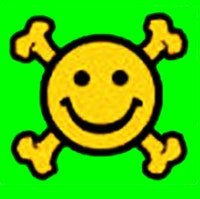
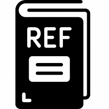

|  |  |
This paper is on face/head reenactment where the goal is to transfer the facial pose (3D head orientation and expression) of a target face to a source face. Previous methods focus on learning embedding networks for identity and pose disentanglement which proves to be a rather hard task, degrading the quality of the generated images. We take a different approach, bypassing the training of such networks, by using (fine-tuned) pre-trained GANs which have been shown capable of producing high-quality facial images. Because GANs are characterized by weak controllability, the core of our approach is a method to discover which directions in latent GAN space are responsible for controlling facial pose and expression variations. We present a simple pipeline to learn such directions with the aid of a 3D shape model which, by construction, already captures disentangled directions for facial pose, identity and expression. Moreover, we show that by embedding real images in the GAN latent space, our method can be successfully used for the reenactment of real-world faces. Our method features several favorable properties including using a single source image (one-shot) and enabling cross-person reenactment. Our qualitative and quantitative results show that our approach often produces reenacted faces of significantly higher quality than those produced by state-of-the-art methods for the standard benchmarks of VoxCeleb1 & 2.
The key idea of our method is to discover disentangled directions in the latent space of a pretrained generator $G$ that can be used to control the facial pose (head orientation and expression). To achieve our goal, we describe a simple pipeline that is trained with the aid of a linear 3D shape model ($\mathrm{Net_{3D}}$) which already contains disentangled directions for facial shape in terms of pose, identity and expression. In more detail, the generated images from random noise vectors $\mathbf{z}_s$ (source) and $\mathbf{z}_t$ (target) are fed into the $\mathrm{Net_{3D}}$ network to calculate the facial pose parameter vectors $\mathbf{p}_s$ and $\mathbf{p}_t$, respectively. Given the shift $\Delta \mathbf{w} = \mathbf{A}\Delta \mathbf{p}$, the new latent code $\mathbf{w}_r = \mathbf{w}_s + \boldsymbol{\Delta}\mathbf{w}$ is used to generate a reenacted image that has the facial pose of the target face, while maintaining the identity of the source face. The matrix of directions $\mathbf{A}$ is the only trainable module of our architecture.
@article{bounareli2022finding,
title={Finding Directions in GAN's Latent Space for Neural Face Reenactment},
author={Bounareli, Stella and Argyriou, Vasileios and Tzimiropoulos, Georgios},
journal={arXiv preprint arXiv:2202.00046},
year={2022}
}